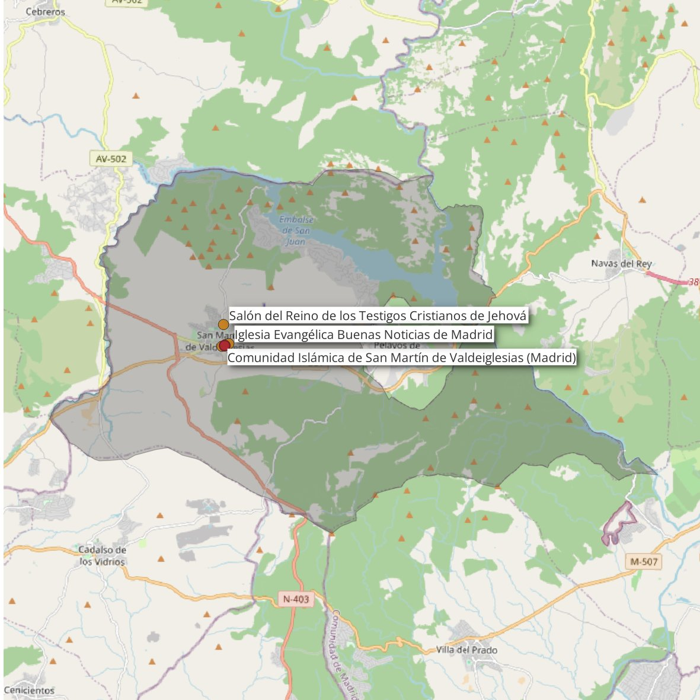
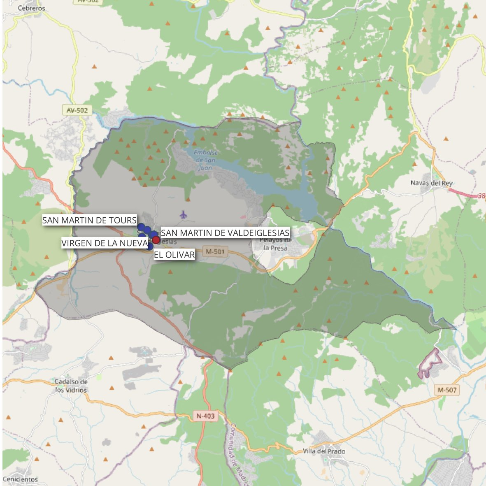

Puntos de interés en el territorio parroquial
Parroquia San Martín Obispo (San Martín de Valdeiglesias) · Arciprestazgo de San Martín de Valdeiglesias
Entidades religiosas no católicas

4 entidades religiosas no católicas en el territorio de la parroquia.
Evangélicos (2)
- Iglesia Cristiana Evangélica de San Martín de ValdeiglesiasCalle del General Martinez Benito 1, San Martín de Valdeiglesias
- Iglesia Evangélica Buenas Noticias de MadridCalle General Martínez Benito 1, San Martín de Valdeiglesias
Musulmanes (1)
- Comunidad Islámica de San Martín de Valdeiglesias (Madrid)Avenida de Madrid 23 Bajo, San Martín de Valdeiglesias
Testigos de Jehová (1)
- Salón del Reino de los Testigos Cristianos de JehováCarretera Virgen de la Nueva 1, San Martín de Valdeiglesias
Fuente: Registro de Entidades Religiosas del Ministerio de la Presidencia, Justicia y Relaciones con las Cortes. Situación en el mapa: dirección geocodificada con CartoCiudad (IGN) o Nominatim (OpenStreetMap).
Centros educativos

11 centros educativos en el territorio de la parroquia (público: 11).
| Centro | Tipo | Titularidad | Domicilio | Web |
|---|---|---|---|---|
| EL OLIVAR | Escuela infantil | Público | Calle las Afiladeras, 18, 28680 San Martín de Valdeiglesias | Página web |
| EQUIPO ATENCION TEMPRANA SAN MARTIN DE VALDEIGLESIAS | Equipo de orientación educativa y psicopedagógica. Atención temprana | Público | Calle de la Fuente, 4, 28680 San Martín de Valdeiglesias | Página web |
| EQUIPO GENERAL SAN MARTIN DE VALDEIGLESIAS | Equipo de orientación educativa y psicopedagógica. General. | Público | Calle de la Fuente, 4, 28680 San Martín de Valdeiglesias | Página web |
| EXTENSION DE LA ESCUELA OFICIAL DE IDIOMAS DE ALCORCON EN SAN MARTIN DE VALDEIGLESIAS | Extension escuela oficial de idiomas | Público | Carretera de N-403 (Toledo), s/n, 28680 San Martín de Valdeiglesias | Página web |
| LA LUNA | Escuela infantil-casa de niños | Público | Avenida del Ferrocarril, s/n, 28680 San Martín de Valdeiglesias | Página web |
| PEDRO DE TOLOSA | Instituto de educación secundaria | Público | Calle de los Estudios, 1, 28680 San Martín de Valdeiglesias | Página web |
| SAN MARTIN DE TOURS | Colegio de educación infantil y primaria | Público | Camino de Aliseda, s/n, 28680 San Martín de Valdeiglesias | Página web |
| SAN MARTIN DE VALDEIGLESIAS | Centro público de educación de personas adultas | Público | Calle de la Fuente, 4, 28680 San Martín de Valdeiglesias | Página web |
| SAN MARTIN DE VALDEIGLESIAS | Escuela municipal de música | Público | Calle del General Martínez Benito, 4, 28680 San Martín de Valdeiglesias | Página web |
| SUR-4, SAN MARTIN DE VALDEIGLESIAS | Zona casas de niños | Público | Avenida del Ferrocarril, s/n, 28680 San Martín de Valdeiglesias | Página web |
| VIRGEN DE LA NUEVA | Colegio de educación infantil y primaria | Público | Calle del Dr F Rodríguez de la Fuente, 2, 28680 San Martín de Valdeiglesias | Página web |
Fuente: registro de centros educativos de la Comunidad de Madrid. Solo se recogen los centros en situación de alta.